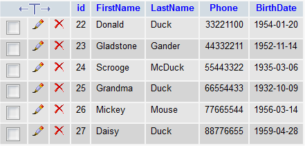
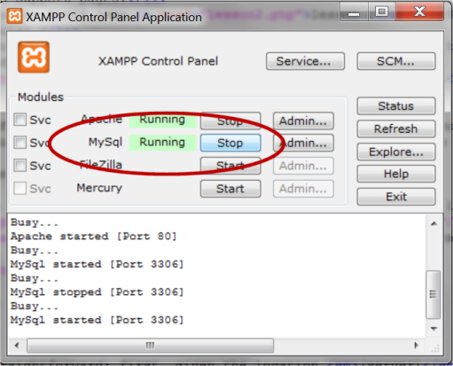

Lição 17: Banco de Dados
Um Banco de Dados é um conjunto de informações / dados organizados de uma maneira a facilitar as tarefas de extração, manutenção e atualização dos dados. Banco de Dados possibilitam a criação de sites dinâmicos com grande quantidade de informações. Por exemplo:os dados sobre todos os membros do site HTML.net bem como todos os posts dos forums do site estão guardados em um Banco de Dados.
Um Banco de dados, em geral é constituído de uma ou mais tabelas. Se você já trabalhou com planilhas ou mesmo com banco de dados, você deve estar familiarizado com tabelas, suas colunas e linhas:

Existem vários tipos de Banco de Dados: MySQL, MS Access, MS SQL Server, Oracle SQL Server e muitos outros. No nosso tutorial usaremos o Banco de Dados MySQL. MySQL é o tipo de Banco de Dados mais indicado e natural para se usar com PHP.
Para acompanhar esta e as próximas lições você precisa ter acesso a um Banco de Dados:
- Se você tem um site PHP hospedado remotamente é quase certo que MySQL esteja disponível no servidor. Informe-se com o suporte do seu servidor de hospedagem.
- Se você instalou PHP no seu computador e quiser instalar MySQL faça o download de um a versão gratuita (MySQL Community Edition) no site do MySQL.
- Se você está usando XAMPP (ver liçaõ 2) MySQL já foi instalado e está pronto para ser usado. Certifique-se, no Painel de Controle, que MySQL está sendo executado:

A seguir, nesta lição, veremos como conectar a um Banco de Dados e nas lições seguintes aprenderemos a criar um Banco de Dados e dele extrair e atualizar dados.
Conexão com o Banco de Dados
Primeiro você precisa ter acesso ao servidor no qual está instalado o Banco de Dados. O acesso é feito com uso da função mysql_connect que admite a seguinte sintaxe:
mysql_connect(servidor, usuário, senha)
Simples e direto: O parâmetro (servidor) indica o local onde se encontra o Banco de Dados, usuário e senha indicam o nome do usuário e a senha de acesso ao Banco de Dados.
Se você possui um site, leia a documentação de suporte do seu servidor para saber o local do servidor MySQL. Nome de usuário e senha em geral é o mesmo que você usa para acessr o site via FTP. Se não for contacte o suporte para seu servidor.
Exemplo de conexão MySQL para um site em servidor remoto:
mysql_connect("mysql.myhost.com", "user001", "sesame") or die(mysql_error());
Exemplo de conexão MySQL com servidor local XAMPP (configuração padrão):
mysql_connect("localhost", "root", "") or die (mysql_error());
Notar nos exemplos a inclusão de or die(mysql_error()) que, resumo, destina-se a interromper o script e retornar uma mensagem de erro caso não seja possível estabelecer a conexão.
É assim que se faz a conexão com o servidor MySQL. Agora você já está em condições de criar Banco de Dados, extrair e inserir dados. É exatamente isso que aprenderemos nas próximas lições.
Ah sim! não se esqueça que é de boa prática encerrar a conexão tão logo você tenha terminado de usar o Banco de Dados. Para isso use a função mysql_close.